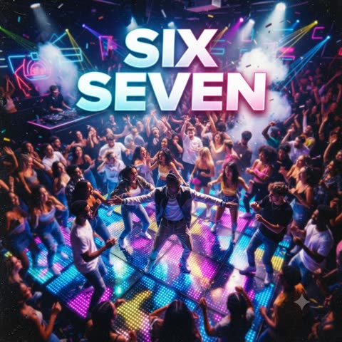

Vizcaya Sound · 2026-08-05
Six Seven (pancit canton beat)
Lyrics
Six... Seven!
Listen to the beat, ready, set, go!
Pancit canton sa gabi, let's flow!
I-ready ang steps, One, Two, Three, let's go
Late night scroll, naghahanap ng trip
Pancit canton muna bago mag-clip
Mainit ang lasa, halo ng seasoning
Habang sa feed mo, puro side-swipe streaming
Sabi ng barkada, "Ano ba ang bago?"
May bagong galaw na paputok sa radyo!
Left hand, right hand, i-slide mo na
Wala nang mahiyain, sumayaw ka na
I-ready ang camera, One, Two, Three...
Sabay-sabay tayong mag-Six, Seven!
Six Seven! Ang bagong sayaw 'ko!
Galaw-galaw, 'wag nang mag-pa cute lang dito!
Side swipe left, side swipe right!
Pancit canton beat, hahataw tonight!
Six Seven! Ang bagong ritmo!
Buong mundo sasabay sa atin 'to!
(Hey! Hey! Six, Seven)
Extra calamansi, extra spicy din
Bagong dance trend, lahat mapapatingin
Pasok sa FYP, nag-trending na naman
Bawat kumpas, pang-Gen Z ang larangan
Ipagpag ang pagod, itapon ang stress
Sa bagong koreography, score ay 100/10!
Left hand, right hand, i-slide mo na
Wala nang mahiyain, sumayaw ka na
I-ready ang camera, One, Two, Three...
Sabay-sabay tayong mag-Six, Seven,!
Six Seven! Ang bagong sayaw 'ko!
Galaw-galaw, 'wag nang mag-pa cute lang dito!
Side swipe left, side swipe right!
Pancit canton beat, hahataw tonight!
Six Seven! Ang bagong ritmo!
Buong mundo sasabay sa atin 'to!
Count it off now!
Six! (Step left)
Seven! (Step right)
Side Swipe! (Slide now)
Chili-mansi slide to the side, don't stop!
From the screen to the street, make the beat pop!
Six... Seven... Let's go! Let's go!
Six Seven! Ang bagong sayaw 'ko!
Galaw-galaw, 'wag nang mag-pa cute lang dito!
Side swipe left, side swipe right!
Pancit canton beat, hahataw tonight!
Six Seven! Ang bagong ritmo!
Buong mundo sasabay sa atin 'to!
Side swipe left... side swipe right...
Six Seven... Ready, set, go!
Pancit canton status: finished!